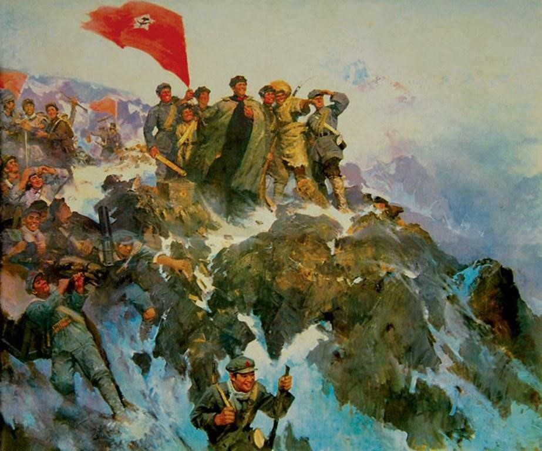

头版
头版

2021年是中国共产党百年华诞，中国站在两个一百年的历史交汇点，全面建设社会主义现代化国家新征程即将开启。世界各国将目光投向中国，聚焦中国共产党矢志不渝为人民谋幸福，为民族谋复兴，为世界谋大同。习近平总书记指出：“广大党员、干部和人民群众要很好地学习了解党史、新中国史、守住党领导人民创立的社会主义伟大事业，世世代代传承下去”在这个中国共产党成立100周年的时间里。我们要深刻领会认真学习党的百年历史，树立正确历史观，从党的奋斗和发展中汲取营养。
百年以前，民族危难之际，中国共产党的成立，让这片苦难的大地焕发出新的生机。在风雨中飘摇新生的共产党，就像一盏明灯，照亮了漫漫长夜。百年的奋斗历程里，历尽沧桑，饱受磨难的中国共产党，自诞生之日起，就肩负着改变中国命运、争取民族独立、人民解放、国家富强的重任。一直以来，党的历史主题和主线，就是由中国共产党领导全国各族人民，通过伟大、艰苦、曲折的斗争，经过新民主主义革命，赢得民族独立和自身解放，并且在社会主义改造、建设和改革下，将一个极度贫弱的旧中国逐步变成一个繁荣昌盛、充满生机和活力的社会主义新中国。
“不忘初心，牢记使命，永远奋斗”这是党的不懈奋斗史的完美写照。“为人民谋幸福，为民族谋复兴”，这个自中国共产党成立以来就确定的无比壮丽的崇高事业，正在一代代中国共产党人的带领下，和广大人民一起将它变为现实。百年奋斗历程，从建党到新民主主义革命结束，中国共产党团结广大人民群众，历经抗日战争、解放战争，推翻了帝国主义、封建主义、官僚资本主义三座大山的统治，建立了人民共和国，取得了革命的胜利；在社会主义革命时期，共产党领导劳动人民推翻资产阶级统治和资本主义制度，建立无产阶级专政和社会主义制度，实现了生产关系的变革；而在改革开放历史新时期，中国共产党与时俱进，将马克思主义的基本原理与当代中国社会主义建设实践相结合，逐步形成了建设中国特色社会主义的理论、路线、方针和政策。这波澜壮阔的百年党史，是不断为人民奋斗，不断为人民奉献、不断为人民谋福祉的伟大奋斗史。
纵观我们党的历史，就是一部不断推进马克思主义中国化的历史，就是一部不断推进理论创新、进行理论创造的历史 。“理论探索史”是党史的灵魂，是赋予鲜明中国特色和时代特征的理论建设道路。百年以来，我们党坚持解放思想和实事求是相统一，不断深入对马克思主义的创新和中国化，逐渐产生了毛泽东思想、邓小平理论、“三个代表”重要思想、科学发展观、新时代中国特色社会主义思想，为党和人民事业的发展提供了理论指导。而这些宝贵的政治和精神财富，是全党全国各族人民团结奋斗的思想基础与精神支柱，是历经实践的检验，作为指引党和人民不断走向胜利的指南和纲领。
百年峥嵘岁月里，中国共产党在自身建设上，始终以人民为中心，坚持全心全意为人民服务。始终怀揣“立党为公、执政为民”的执政理念，坚守党的政治本色和使命担当。党的建设，始终是把实现好、维护好、发展好最广大人民的根本利益作为出发点和落脚点，不断践行自我完善、自我提高、自我革新的党的建设。而在百年后的新时期，继续深化党的思想建设、加强党风党纪建设、全面从严治党这些举措，更是对党的自身建设进行继承和发扬，向历史和人民提交了一份满意的答案。
回顾百年党史，我们看到历尽风霜洗礼的伟大祖国，百年间砥砺前行，风雨兼程。如今，在这个百年未有之大变局的特殊历史时刻，在中国共产党的领导下，在各族人民的团结共勉下，在人民群众的奋斗探索下，朝气蓬勃的祖国，也必将迎来伟大的复兴和胜利！